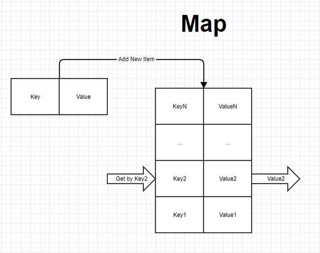
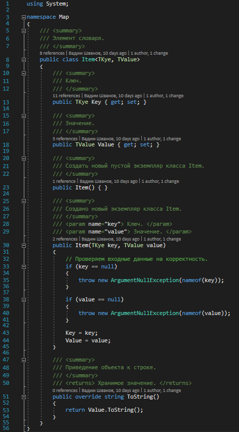
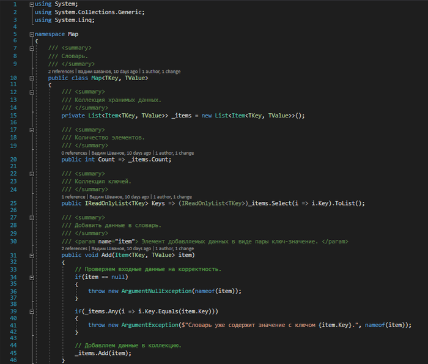
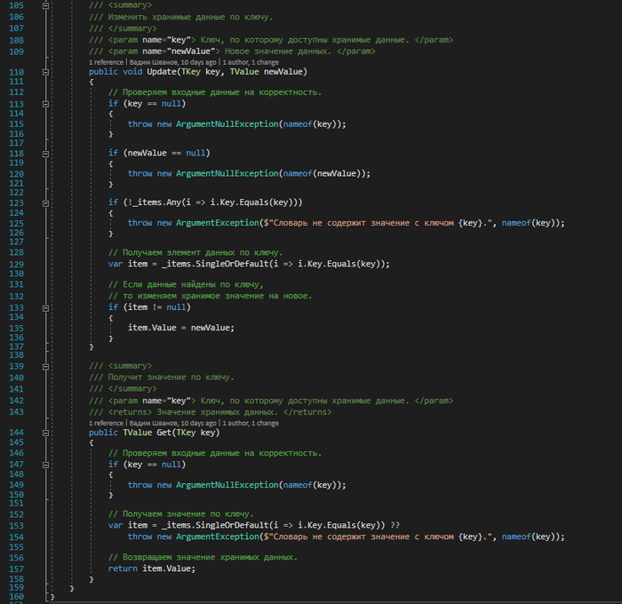
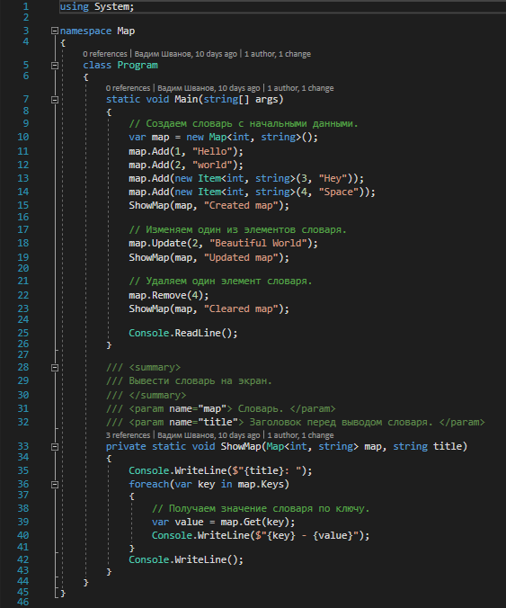
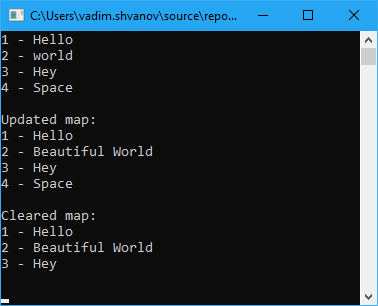

| Тема 3. Словарь (map) на языке C#. | ||
| Назад | ||
|
Словарь (map) — это структура данных, представляющая собой специальным образом организованный набор элементов хранимых данные. Все данные хранятся в виде пар ключ-значение. Доступ к элементам данных осуществляется по ключу. Ключ всегда должен быть уникальным в пределах одного словаря, данные могут дублироваться при необходимости. У данной структуры есть и другие часто встречающиеся названия: ассоциативный массив или Dictionary. Принцип работы словаря схож с камерой хранения: есть ячейка, в которой может храниться что угодно, но доступ к этой ячейке осуществляется по уникальному номеру, благодаря чему ее всегда легко найти. Давайте рассмотрим пример реализации словаря на языке C#. На рисунке ниже представлена схематичная структура словаря.

У словаря доступ осуществляется к любому из элементов хранимых данные по его ключу. Основные операции, которые могут выполняться со словарем:
1. Add — добавление нового элемента с уникальным ключом. 2. Remove — удаление элемента по ключу. 3. Update — изменить хранимое значение по ключу. 4. Get — получить хранимое значение по ключу.
Теперь приступим к реализации данной структуры данных. Будем использовать обобщенный класс с двумя принимаемыми типами для ключа и значения. Для хранения данных воспользуемся списком. Данная реализация является весьма примитивной, но позволяет разобраться в структуре и алгоритме работы данного типа данных. Теперь рассмотрим программный код. Элемент словаря

Объявим класс словаря, его свойства и реализуем основные операции


Теперь проверим работу словаря обратившись к нему

Ну и наконец запустим приложение и посмотрим результат работы на консоли

Заключение На платформе .NET уже есть готовая реализация данной структуры данных. Она содержится в пространстве имен System.Collections и называется Dictionary. Я не претендую на правильность, оптимальность и красоту реализации. Единственная цель, которую я преследую, поделиться полезной информацией о программировании, которая может кому-то пригодиться.
|
||
| Конспект подготовлен Бакулиным А. М. 2012 год. | ||